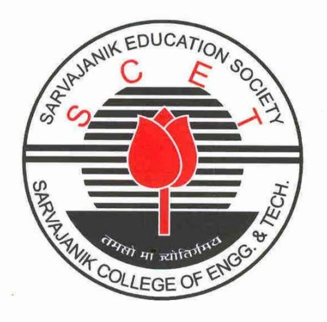
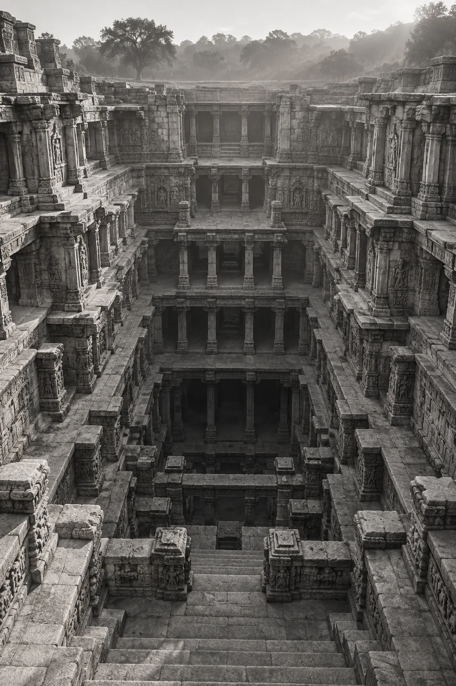
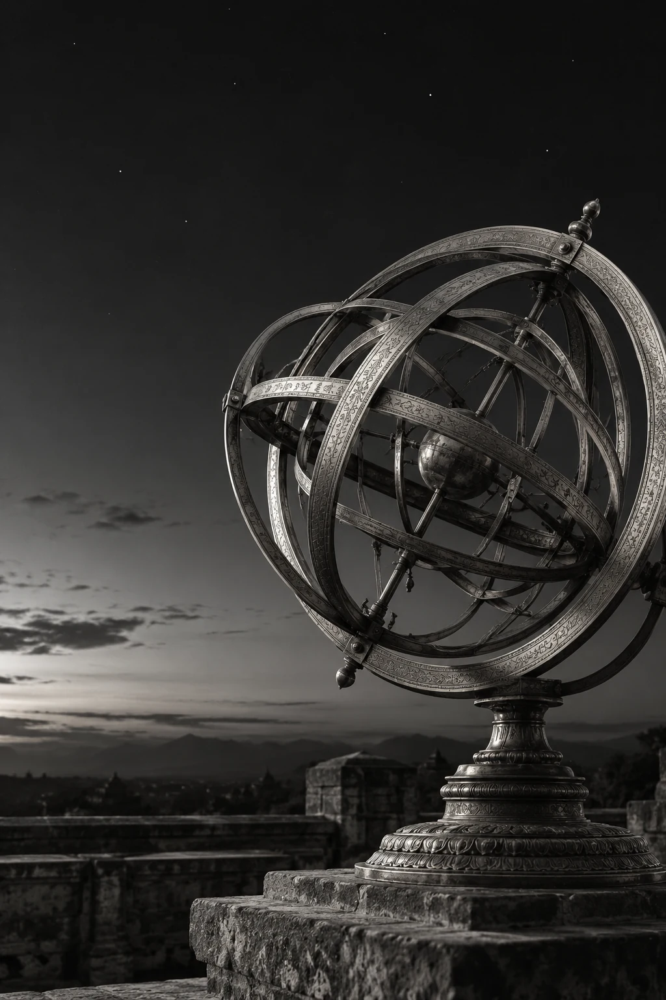
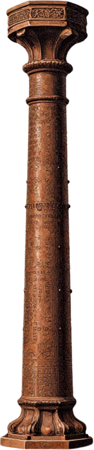
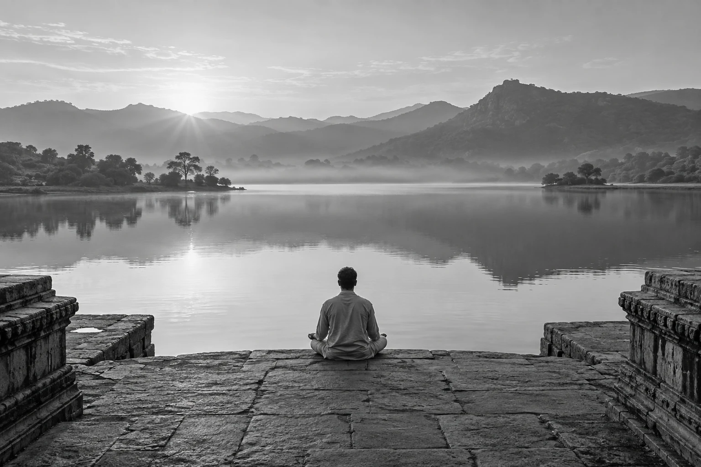
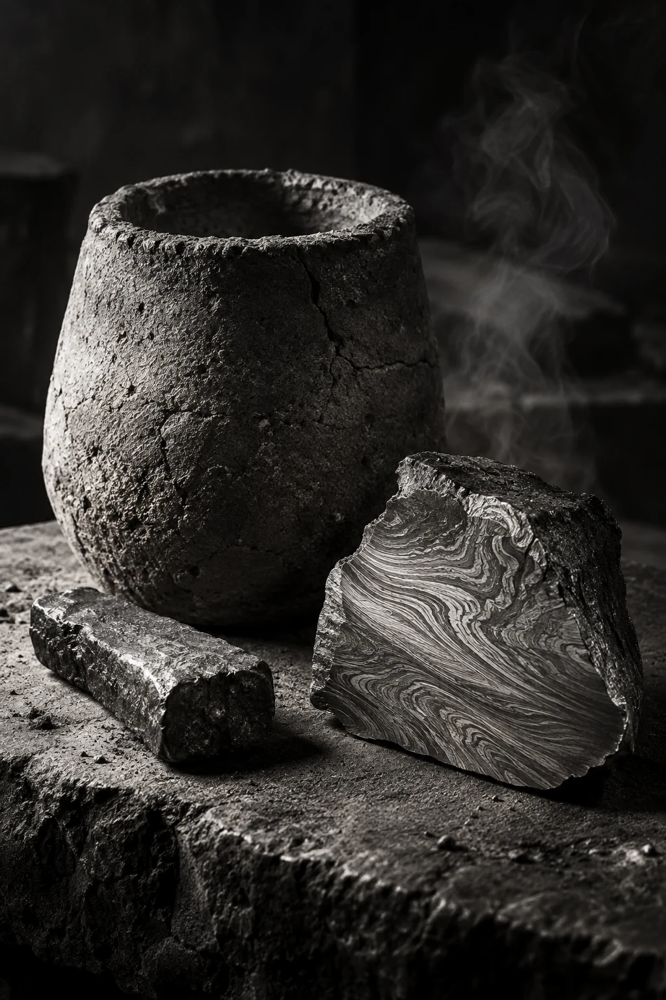

c. 2500 BCE
Indus Valley
Urban planning, drainage and standardised weights. A heritage read through material evidence.
Ancient India / A scientific heritage
SARVAJANIK UNIVERSITY
Sarvajanik College of
Engineering & Technology

Scientific inventions of ancient India
BTAS20102
Electrical
engineering
I
2026–2027
SCET
SARVAJANIK UNIVERSITY
A journey through mathematics, astronomy, architecture, medicine and materials.
Electrical engineering
Semester I · 2026–2027
BTAS20102

A scientific heritage.
A continuing influence.
SARVAJANIK COLLEGE OF
ENGINEERING & TECHNOLOGY
THE TEAM / ELECTRICAL ENGINEERING
| Enrollment | Student |
|---|---|
| ET26BTEL018 | Sardhara Neel Ghanshyambhai |
| ET26BTEL026 | Jethva Raj Jaysukhbhai |
| ET26BTEL027 | Ghori Rujal Kalpeshbhai |
| ET26BTEL028 | Pethani Shivam Mukeshbhai |
| ET26BTEL033 | Patel Vansh Kirtikumar |
Dr. Dhara Desai
Prof. Meet Trivedi
Five students.
One shared inquiry.
SCIENTIFIC INVENTIONS OF ANCIENT INDIA
SELECT A DISCIPLINE TO EXPLORE
CONTEXT / THREE BROAD ERAS
Archaeology and manuscripts offer different kinds of evidence.
c. 2500 BCE
Urban planning, drainage and standardised weights. A heritage read through material evidence.
500 BCE—1200 CE
Mathematics, astronomy and medicine preserved through Sanskrit texts and commentaries.
1200—1700 CE
Earlier traditions developed and circulated through scholarship, craft and trade.
01 / MATHEMATICS
The language
of possibility.
Zero makes absence calculable.
A compact way to express magnitude.
Numerals travel across cultures.
01 / THE SIMPLE IDEA
Zero and place value made numbers easier to write and calculate. These ideas help us use mathematics every day.
SCIENTIFIC HERITAGE / MATHEMATICS
ZERO / BRAHMAGUPTA
0
628 CE / ARITHMETIC RULES FOR ZERO
An empty position preserves the value of the other digits.
Zero participates in arithmetic, rather than simply marking absence.
A central idea in mathematics and, much later, computing.
A symbol for nothing.
A tool for everything.
DECIMAL SYSTEM / BASE TEN
The same digit can carry a different value.
Its position tells us how much.
300 + 0 + 7 = 307
CLICK A DIGIT TO CHANGE ITS VALUE
MODERN NUMERALS / A SHARED EVOLUTION
1 2 3 4 5 6 7 8 9
Numeral forms developed within Indian mathematical traditions.
Scholars transmitted, used and adapted the system across regions.
The Hindu-Arabic system spread gradually through calculation and commerce.
02 / ASTRONOMY
Read recurring patterns in the sky.
Use mathematics to describe celestial motion.

02 / THE SIMPLE IDEA
Astronomy studies the sky. Indian astronomers used mathematics to explain Earth’s rotation, predict eclipses and estimate the size of our planet.
SCIENTIFIC HERITAGE / ASTRONOMY
ARYABHATA / EARTH’S ROTATION
The apparent movement of the stars can be explained by the rotation of the observer’s world.
499
CE / ARYABHATIYA
SOLAR & LUNAR ECLIPSES
Aryabhata explained eclipses through the shadows of the Moon and Earth.
Solar eclipse: the Moon passes between the Sun and Earth.
EARTH’S CIRCUMFERENCE / ESTIMATE & MEASUREMENT
39,968
KM / ESTIMATE CITED IN THE ORIGINAL DECK
40,075
KM / MODERN EQUATORIAL CIRCUMFERENCE
Ancient units complicate modern comparison.
The achievement is the ambition to measure.
≈ 0.27% DIFFERENCE
FOR THESE TWO VALUES
03 / ARCHITECTURE & SCULPTURE
Street patterns, drainage and shared infrastructure.
Water systems, stonework and resilient metal.
03 / THE SIMPLE IDEA
Good design helps people live together. Planned streets, drainage and water storage show how engineering can solve everyday needs.
SCIENTIFIC HERITAGE / ARCHITECTURE
URBAN PLANNING / INDUS VALLEY CIVILISATION
CONCEPTUAL GRID / NOT AN ARCHAEOLOGICAL SITE PLAN
Harappa and Mohenjo-Daro reveal deliberate spatial planning.
Drainage and built infrastructure connected daily life.
Material remains are clear; administrative intent is less certain.
WATER HARVESTING / GUJARAT
11th
CENTURY CE / RANI-KI-VAV, PATAN
Stepwells, tanks and reservoirs managed seasonal water needs.
Storage, access and sculptural craft became a single design.
DELHI IRON PILLAR / c. 400 CE

A monumental example of ancient Indian ironworking.
Phosphorus and the growth of a passive film help explain its resilience.
1,600+
YEARS OF REMARKABLE CORROSION RESISTANCE
04 / BIOLOGY & MEDICINE
Diagnosis and anatomical study.
Medicine, surgery and prevention.
Yoga and meditative disciplines.
04 / THE SIMPLE IDEA
Care starts with understanding the body. Ayurveda, surgical texts and yoga show different ways Indian traditions approached health and wellbeing.
SCIENTIFIC HERITAGE / MEDICINE
AYURVEDA / CLASSICAL MEDICAL TRADITIONS
The Charaka and Sushruta traditions bring diagnosis, prevention and treatment into a broader philosophy of life.
Traditionally associated with movement.
Traditionally associated with transformation.
Traditionally associated with structure and cohesion.
SURGERY / SUSHRUTA SAMHITA
A tradition of learning through observation, anatomy and hands-on training.
Descriptions of nasal reconstruction are among the text’s notable surgical contributions.
The text describes historical approaches to cataracts and other eye conditions.
Anatomy and practical exercises form part of the surgical learning tradition.
YOGA & MEDITATION / CLASSICAL TRADITIONS

Posture within a broader discipline.
The cultivation of breath control.
Meditative attention and absorption.
Patanjali’s Yoga Sutras articulate an eight-limbed path. Its aims extend beyond physical exercise.
05 / CHEMISTRY & MATERIALS

Obtain metal from mineral sources.
Control composition and processing.
Make materials with enduring value.
Craft knowledge.
Material intelligence.
05 / THE SIMPLE IDEA
Materials can change when we heat, mix or shape them. Indian craftspeople used these changes to make useful metals and alloys.
SCIENTIFIC HERITAGE / CHEMISTRY
METALLURGY / EXTRACTION & ALLOYING
Copper, tin, gold and iron became tools, structures and works of art.
Separate useful metals from their ores.
Combine constituents to create new material properties.
Forge, cast and work metal into useful forms.
WOOTZ / SOUTH INDIAN CRUCIBLE STEEL
High-carbon crucible steel travelled through trade and contributed to the celebrated patterned-blade traditions of West Asia.
Iron and carbon-bearing material.
A sealed crucible process.
Material structure develops.
ZINC DISTILLATION / ZAWAR, RAJASTHAN
An early centre of large-scale zinc production.
A process built around a difficult metal.
Heating the charge liberates zinc vapour within the retort.
SIMPLIFIED PROCESS / NOT A FURNACE RECONSTRUCTION
LEGACY / A SHARED SCIENTIFIC INHERITANCE
A language for calculation.
A model of the visible sky.
Systems for collective life.
Traditions of observation and care.
Knowledge embodied in materials.
REFERENCES / FURTHER STUDY
Aryabhatiya
Brahmasphuta-
siddhanta
Charaka & Sushruta Samhitas
Surya Siddhanta
Kim Plofker
David Pingree
George Gheverghese Joseph
ASI reports
Harappa & Mohenjo-Daro
National Museum, New Delhi
British Museum
Rani-ki-Vav & Zawar
DISCUSSION / THE NEXT QUESTION
Consider the five disciplines. Which examples are mathematical ideas, which are built systems, and which are material practices?
Compare axial rotation, eclipse geometry and attempts to measure Earth. How did mathematics help connect observation with explanation?
Discuss material composition and protective surface chemistry. What does modern analysis add to the historical achievement?
Try the place-value demonstration. What changes when a digit moves, and what information does an empty position preserve?
Choose one contribution and defend it with evidence. Consider direct influence, later adaptation and the role of knowledge exchange.
OPEN A QUESTION TO BEGIN THE DISCUSSION
SCIENTIFIC INVENTIONS OF ANCIENT INDIA
The next discovery
starts with a question.
Thank you.
SCET / ELECTRICAL ENGINEERING
TECHNICAL COMMUNICATION · 2026–2027